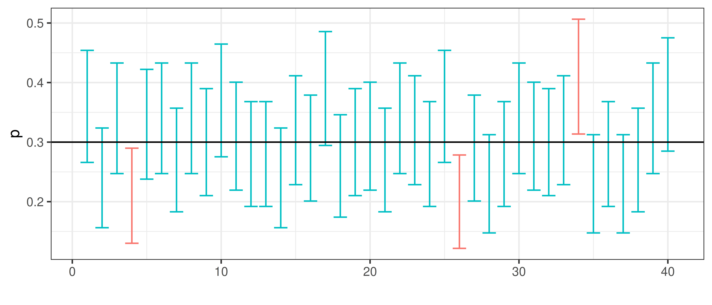

Point and interval estimates
Point estimate
As seen in previous chapter, the sample proportion and sample mean are unbiased estimates of the corresponding population statistics. When we only have a sample, the sample estimate will be our best guess, a point estimate, of the population value, but it will not be without error, but the larger the sample, the smaller the error.
If we are interested in how large proportion of the Uppsala population is allergic to pollen, we can investigate this by studying a random sample, e.g. randomly select 100 persons in Uppsala. It is important to actually sample randomly, ideally every individual in the population should have the same probability of being sampled.
In our sample, we observed that 42 of the 100 has a pollen allergy. Hence, the observed sample proportion is \(p=0.42\).
Based on this observation our point estimate of the Uppsala popultation proportion \(\pi\) is \(\pi \approx p = 0.42\). We know that there is an uncertainty in this measurement, if the experiment is repeated we would select 100 other persons and our point estimate would be slightly different.
Confidence interval
A confidence interval is a type of interval estimate associated with a confidence level.
Definition 1 Confidence interval An interval that with probability \(1 - \alpha\) cover the population parameter \(\theta\) is called a confidence interval for \(\theta\) with confidence level \(1 - \alpha\).
Figure 7: A 95% confidence interval will have 95% chance to cover the true value.
Bootstrap interval
If the distribution of the random variable of interest is unknown, a bootstrap confidence interval can be computed instead.
Bootstraping is performed by resampling with replacement from the available random sample. The resampling distribution can then be used to calculate e.g. a 95% bootstrap interval.
This can be done as follows;
- Put the entire sample in an urn!

Figure 8: An urn model with 42 allergy (black) and 58 non-allergy (white). The black balls represent allergic and the white balls non-allergic.
In R;
- Sample from the urn with replacement to compute the bootstrap distribution.
Figure 9: Bootstrap resampling distribution.
- Compute the 95% bootstrap interval. This can be done using the percentile method by calculating the 2.5 and 97.5 percentiles, i.e. the values in the resampling distribution for which 2.5% and 97.5%, respectively, of all the values lie to the left of.
Figure 10: Bootstrap resampling distribution and the 95% bootstrap confidence interval.
The 95% bootstrap confidence interval of \(\pi\); [0.33, 0.52].
Confidence interval of proportions
The bootstrap is very useful if you do not know the distribution of our sampled property, but in our proportions example we actually do.
Remember that we can use the central limit theorem to show that
\[P \sim N\left(\pi, SE\right) \iff P \sim \left(\pi, \sqrt{\frac{\pi(1-\pi)}{n}}\right)\]
It follows that
\[Z = \frac{P - \pi}{SE} \sim N(0,1)\] Based on what we know of the standard normal distribution, we can compute an interval around the population property \(\pi\) such that the probability that a sample property \(p\) fall within this interval is \(1-\alpha\).
\[P(-z_{\alpha/2} < \frac{P - \pi}{SE} < z_{\alpha/2}) = 1 - \alpha\]
For a 95% confidence interval \(z_{0.025}=1.96\) (from a table of the standard normal distribution). Other confidence levels of interest include 90% (\(z_{0.05}=1.64\)) and 99% (\(z_{0.005}=2.58\)). In R, the function ´qnorm` is used to compute \(z_{\alpha/2}\),
## 95% confidence interval, alpha=0.05
qnorm(1-0.05/2)## [1] 1.96## 90% confidence interval, alpha=0.10
qnorm(1-0.10/2)## [1] 1.645## 99% confidence interval, alpha=0.01
qnorm(1-0.01/2)## [1] 2.576The unequality can be rewritten;
\[-z_{\alpha/2} < \frac{P-\pi}{SE}<z_{\alpha/2} \iff P-z_{\alpha/2}SE \leq \pi \leq P + z_{\alpha/2}SE\] Hence,
\[P\left(P-z SE < \pi < P + z SE\right) = 1 - \alpha\] In words, the population proportion \(\pi\) will lie within \(\pm z_{\alpha/2}SE\) from the the sample proportion \(P\).
To get the observed confidence interval, replace the random variable \(P\) with the observed value \(p\) (in our example 0.42).
The confidence interval can be expressed in different was;
\[p-z_{\alpha/2} SE < \pi < p + z_{\alpha/2} SE\] \[\pi = p \pm z_{\alpha/2} SE\] \[(p - z_{\alpha/2} SE, p + z_{\alpha/2} SE)\]
The 95% confidence interval \[\pi = p \pm 1.96 \sqrt{\frac{p(1-p)}{n}}\] will have 95% chance to cover the true value.

Back to our example of proportion pollen allergic in Uppsala. \(p=0.42\) and \(SE=\sqrt{\frac{p(1-p)}{n}} = 0.0494\).
Hence, the 95% confidence interval is \[\pi = 0.42 \pm 1.96 * 0.05 = 0.42 \pm 0.092\] or \[(0.42-0.092, 0.42+0.092) = (0.32, 0.52)\]
Confidence interval of mean
The confidence interval of mean can be derived similarly.
The mean of a sample of \(n\) independent and identically normal distributed observations \(X_i\) is normally distributed;
\[\bar X \sim N(\mu, \frac{\sigma}{\sqrt{n}})\]
If \(\sigma\) is unknown the statistic
\[T = \frac{\bar X - \mu}{\frac{s}{\sqrt{n}}}\]
is t-distributed with \(n-1\) degrees of freedom, in short \(T \sim t(n-1)\).
It follows that
\[ \begin{aligned} P\left(-t < \frac{\bar X - \mu}{\frac{\sigma}{\sqrt{n}}} < t\right) = 1 - \alpha \iff \\ P\left(\bar X - t \frac{\sigma}{\sqrt{n}} < \mu < \bar X + t \frac{\sigma}{\sqrt{n}}\right) = 1 - \alpha \end{aligned} \]
The confidence interval with confidence level \(1-\alpha\) is thus;
\[\mu = \bar x \pm t \frac{s}{\sqrt{n}}\]
The \(t\) values for different values of \(\alpha\) and degrees of freedom are tabulated and can be computed in R using the function qt.
For a 95% confidence interval, i.e. \(\alpha=0.05\), and \(n=5\), \(t\) is 2.7764 and can be computed using
n=5
alpha = 0.05
## t value
qt(1-alpha/2, df=n-1)## [1] 2.776